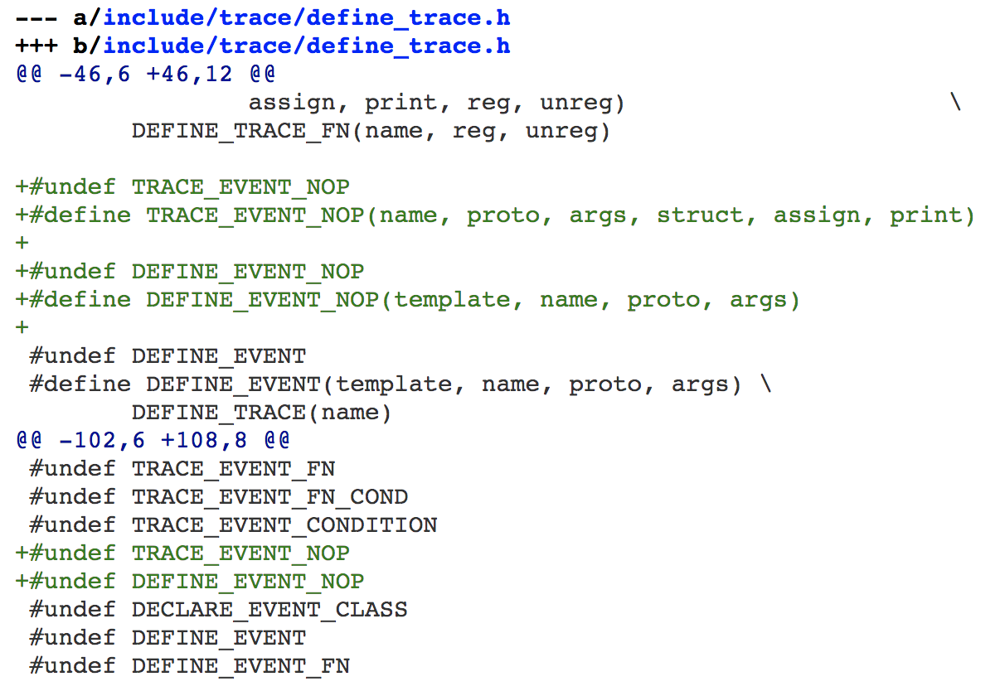
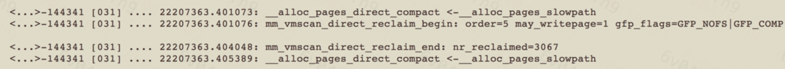

- 00 开篇词 如何让Linux内核更好地服务应用程序？.md.html
- 01 基础篇 如何用数据观测Page Cache？.md.html
- 02 基础篇 Page Cache是怎样产生和释放的？.md.html
- 03 案例篇 如何处理Page Cache难以回收产生的load飙高问题？.md.html
- 04 案例篇 如何处理Page Cache容易回收引起的业务性能问题？.md.html
- 05 分析篇 如何判断问题是否由Page Cache产生的？.md.html
- 06 基础篇 进程的哪些内存类型容易引起内存泄漏？.md.html
- 07 案例篇 如何预防内存泄漏导致的系统假死？.md.html
- 08 案例篇 Shmem：进程没有消耗内存，内存哪去了？.md.html
- 09 分析篇 如何对内核内存泄漏做些基础的分析？.md.html
- 10 分析篇 内存泄漏时，我们该如何一步步找到根因？.md.html
- 11 基础篇 TCP连接的建立和断开受哪些系统配置影响？.md.html
- 12 基础篇 TCP收发包过程会受哪些配置项影响？.md.html
- 13 案例篇 TCP拥塞控制是如何导致业务性能抖动的？.md.html
- 14 案例篇 TCP端到端时延变大，怎样判断是哪里出现了问题？.md.html
- 15 分析篇 如何高效地分析TCP重传问题？.md.html
- 16 套路篇 如何分析常见的TCP问题？.md.html
- 17 基础篇 CPU是如何执行任务的？.md.html
- 18 案例篇 业务是否需要使用透明大页：水可载舟，亦可覆舟？.md.html
- 19 案例篇 网络吞吐高的业务是否需要开启网卡特性呢？.md.html
- 20 分析篇 如何分析CPU利用率飙高问题 ？.md.html
- 加餐 我是如何使用tracepoint来分析内核Bug的？.md.html
- 结束语 第一次看内核代码，我也很懵逼.md.html
- 捐赠
加餐 我是如何使用tracepoint来分析内核Bug的？
你好，我是邵亚方。
我们这个系列课程的目标受众是应用开发者和运维人员，所以，你可以看到课程里的案例在分析应用问题的时候，都在尽量避免分析内核bug，避免把内核代码拿过来逐个函数地解析为什么会这样。我希望这个课程可以降低内核的门槛，让更多人可以更加容易地了解内核机制，从而更好地解决应用难题、提升应用性能。
不过，在我们这个课程的学习者中还是有一些内核开发者的，因此，我写了这篇加餐来分析内核bug，希望能把分析内核bug的一些经验分享给这些内核开发者们。
通过对课程的学习，你应该能发现，我对tracepoint和ftrace是极其推崇的。我对它推崇备至不是没有道理的，这节课我就带你来看下我是如何借助tracepoint来分析内核bug的。
炫技般存在的tracepoint内核源码
如果你看过tracepoint的内核代码，相信你一定对它炫技般存在的宏定义印象深刻。我在第一眼看到这些宏定义时，也是一脸懵逼，不知从何下手，但是很快我就看懂了。为了证明我看懂了，我还特意给tracepoint的这些宏定义又增加了一些定义，我增加的这个宏定义，其关键部分如下：

如果你能看明白这些，那就说明你对这些tracepoint宏的工作机制一清二楚了。当然，这节课我不是来剖析tracepoint内核源码的。如果你不懂tracepoint内核源码，也不妨碍你使用它，不过这对一名内核开发者而言终究是一件憾事。
因为我经常使用tracepoint，所以我对tracepoint的一些功能也比较上心。比如，最近在我的推动下，tracepoint模块的maintainer Steven Rostedt又给tracepoint增加了一个宏定义。我之所以推动Steven增加该宏，是为了让tracepoint函数可以在头文件中使用，以减少因为额外函数调用而带来的开销。有了这个新增的宏之后，你就可以方便地在头文件中使用tracepoint了。
接下来我要讲的这个内核bug，就是借助tracepoint来分析的。
内存申请在慢速路径上为什么会失败
有一次，业务人员反馈说他们在启动程序时会偶然失败，我查看内核日志后发现了下面这些报错信息（这个系统为CentOS-7，对应的内核版本为3.10）：
kworker/31:0: page allocation failure: order:5, mode:0x104050
CPU: 31 PID: 635928 Comm: kworker/31:0 Tainted: G
0000000000104050 000000009a44a60e ffff882016b93808 ffffffff81686b13
ffff882016b93898 ffffffff81187010 0000000000000000 ffff88207ffd8000
0000000000000005 0000000000104050 ffff882016b93898 000000009a44a60e
Call Trace:
[<ffffffff81686b13>] dump_stack+0x19/0x1b
[<ffffffff81187010>] warn_alloc_failed+0x110/0x180
[<ffffffff816826a7>] __alloc_pages_slowpath+0x6b7/0x725
[<ffffffff8118b5c5>] __alloc_pages_nodemask+0x405/0x420
[<ffffffff811cf77a>] alloc_pages_current+0xaa/0x170
[<ffffffff81185eee>] __get_free_pages+0xe/0x50
[<ffffffff811db01e>] kmalloc_order_trace+0x2e/0xa0
[<ffffffff811e05d9>] __kmalloc_track_caller+0x219/0x230
[<ffffffff8119f78f>] krealloc+0x4f/0xa0
[<ffffffffa07eebe6>] osdmap_set_max_osd+0x76/0x1d0 [libceph]
[<ffffffffa07f14f6>] ceph_osdmap_decode+0x216/0x600 [libceph]
[<ffffffffa07ecce4>] handle_one_map+0x224/0x250 [libceph]
[<ffffffffa07ed98f>] ceph_osdc_handle_map+0x6cf/0x720 [libceph]
[<ffffffffa07e3340>] dispatch+0x350/0x7c0 [libceph]
[<ffffffffa07deecf>] try_read+0x4df/0x1260 [libceph]
[<ffffffffa07dfd09>] ceph_con_workfn+0xb9/0x650 [libceph]
[<ffffffff810a845b>] process_one_work+0x17b/0x470
[<ffffffff810a9296>] worker_thread+0x126/0x410
[<ffffffff810b0a4f>] kthread+0xcf/0xe0
[<ffffffff81697118>] ret_from_fork+0x58/0x90
Mem-Info:
active_anon:13891624 inactive_anon:358552 isolated_anon:0#012 active_file:1652146 inactive_file:14520052 isolated_file:0#012 unevictable:0 dirty:472 writeback:0 unstable:0#012 slab_reclaimable:1071185 slab_unreclaimable:201037#012 mapped:53234 shmem:1046930 pagetables:31965 bounce:0#012 free:966225 free_pcp:185 free_cma:0
Node 0 DMA free:15864kB min:48kB low:60kB high:72kB active_anon:0kB inactive_anon:0kB active_file:0kB inactive_file:0kB unevictable:0kB isolated(anon):0kB isolated(file):0kB present:15948kB managed:15864kB mlocked:0kB dirty:0kB writeback:0kB mapped:0kB shmem:0kB slab_reclaimable:0kB slab_unreclaimable:0kB kernel_stack:0kB pagetables:0kB unstable:0kB bounce:0kB free_pcp:0kB local_pcp:0kB free_cma:0kB writeback_tmp:0kB pages_scanned:0 all_unreclaimable? yes
lowmem_reserve[]: 0 1700 64161 64161
Node 0 DMA32 free:261328kB min:5412kB low:6764kB high:8116kB active_anon:303220kB inactive_anon:2972kB active_file:51840kB inactive_file:239320kB unevictable:0kB isolated(anon):0kB isolated(file):0kB present:1952512kB managed:1741564kB mlocked:0kB dirty:0kB writeback:0kB mapped:1160kB shmem:15968kB slab_reclaimable:687588kB slab_unreclaimable:183756kB kernel_stack:6640kB pagetables:724kB unstable:0kB bounce:0kB free_pcp:0kB local_pcp:0kB free_cma:0kB writeback_tmp:0kB pages_scanned:0 all_unreclaimable? no
lowmem_reserve[]: 0 0 62460 62460
Node 0 Normal free:272880kB min:198808kB low:248508kB high:298212kB active_anon:26813396kB inactive_anon:912660kB active_file:2646440kB inactive_file:30619568kB unevictable:0kB isolated(anon):0kB isolated(file):0kB present:65011712kB managed:63960000kB mlocked:0kB dirty:36kB writeback:0kB mapped:144152kB shmem:2567180kB slab_reclaimable:1870364kB slab_unreclaimable:262608kB kernel_stack:12880kB pagetables:45840kB unstable:0kB bounce:0kB free_pcp:652kB local_pcp:0kB free_cma:0kB writeback_tmp:0kB pages_scanned:32 all_unreclaimable? no
lowmem_reserve[]: 0 0 0 0
Node 1 Normal free:3315332kB min:205324kB low:256652kB high:307984kB active_anon:28449880kB inactive_anon:518576kB active_file:3910304kB inactive_file:27221320kB unevictable:0kB isolated(anon):0kB isolated(file):0kB present:67108864kB managed:66056916kB mlocked:0kB dirty:1852kB writeback:0kB mapped:67624kB shmem:1604572kB slab_reclaimable:1726788kB slab_unreclaimable:357784kB kernel_stack:18928kB pagetables:81296kB unstable:0kB bounce:0kB free_pcp:0kB local_pcp:0kB free_cma:0kB writeback_tmp:0kB pages_scanned:0 all_unreclaimable? no
lowmem_reserve[]: 0 0 0 0
Node 0 DMA: 0*4kB 1*8kB (U) 1*16kB (U) 1*32kB (U) 1*64kB (U) 1*128kB (U) 1*256kB (U) 0*512kB 1*1024kB (U) 1*2048kB (M) 3*4096kB (M) = 15864kB
Node 0 DMA32: 36913*4kB (UEM) 14087*8kB (UEM) 44*16kB (UEM) 17*32kB (UEM) 0*64kB 0*128kB 0*256kB 0*512kB 0*1024kB 0*2048kB 0*4096kB = 261596kB
Node 0 Normal: 69629*4kB (UEM) 411*8kB (UEM) 1*16kB (E) 3*32kB (E) 0*64kB 0*128kB 0*256kB 0*512kB 0*1024kB 0*2048kB 0*4096kB = 281916kB
Node 1 Normal: 241701*4kB (UEM) 240734*8kB (UEM) 24010*16kB (UEM) 990*32kB (UEM) 175*64kB (UEM) 20*128kB (UEM) 3*256kB (EM) 0*512kB 0*1024kB 0*2048kB 0*4096kB = 3323044kB
Node 0 hugepages_total=0 hugepages_free=0 hugepages_surp=0 hugepages_size=1048576kB
Node 0 hugepages_total=0 hugepages_free=0 hugepages_surp=0 hugepages_size=2048kB
Node 1 hugepages_total=0 hugepages_free=0 hugepages_surp=0 hugepages_size=1048576kB
从上面的日志可以看出，这是在__alloc_pages_slowpath()分配内存失败，所以有了这个打印:
__alloc_pages_slowpath
{
...
nopage:
// 这里打印的错误日志
warn_alloc_failed(gfp_mask, order, NULL);
return NULL;
}
此时申请的内存大小是order 5，也就是32个连续页。紧接着，我们可以看到各个node具体内存使用情况的打印，该机器共有2个node：
Node 0 DMA free:15864kB min:48kB
Node 0 DMA32 free:261328kB min:5412kB
Node 0 Normal free:272880kB min:198808kB
Node 1 Normal free:3315332kB min:205324kB
从中我们可以发现，各个zone的free内存都大于min，而且相差不止32个page。也就是说，从free内存的大小来看，各个zone都是可以满足需求的。那么，为什么此时会申请内存失败呢？
接下来，我们一起分析失败的原因。
逐一排查可能的情况
对于3.10版本的内核而言，在内存分配慢速路径里失败，原因可以分为以下三种情况：
- 特殊的GFP flags导致；
- 进程自身的状态；
- reclaim和compact无法满足需求。
现在，我们来逐一排查究竟是哪种情况导致的。
GFP flags
此时的GFP flags是0x104050，对应于下面这几项：
#define ___GFP_WAIT 0x10u
#define ___GFP_IO 0x40u
#define ___GFP_COMP 0x4000u
#define ___GFP_KMEMCG 0x100000u
看到这里，你是否思考过：为什么不直接在内核日志里打印出这些GFP flags呢？如果你思考了，那么恭喜你，你具备内核开发者的特质；如果你没有思考过，那么你需要加强这方面的思考：我觉得内核这里有点不好，我得改变它。
我觉得内核日志里打印这些数字不如直接打印对应的GFP flags好，然后我就去查看最新的内核代码，发现这部分已经在新版本的内核里被修改过了，看来其他的内核开发者与我的想法一致。当然，这也说明了使用老版本的内核做开发是一件多么憋屈的事，因为你会发现你在老版本内核里分析清楚的内核bug，早已在新版本中被别人给fix了，这大大限制了我们的发挥空间。
通过前面的调用栈，我们可以知道申请内存是在osdmap_set_max_osd()这个函数中进行的，它对应的内核代码如下：
osdmap_set_max_osd
addr = krealloc(map->osd_addr, max*sizeof(*addr), GFP_NOFS);
if (!addr)
return -ENOMEM;
我们看到这里的GFP flags为GFP_NOFS，它的定义如下：
#define GFP_NOFS (__GFP_WAIT | __GFP_IO)
这与内核日志里的GFP flags是对得上的。然后我们去比较goto nopage;的情况，可以发现这几个flag不会导致这种情况，也就是不会导致nopage。
关于GFP_NOFS的作用，我在这里大致说明一下。它的作用是为了防止某些路径上触发直接内存回收时，回收到正在进行I/O的page从而引起死锁。那什么情况下可能会引起死锁呢？你可以参考一下我尚未完成的PATCH：xfs: avoid deadlock when trigger memory reclaim in ->writepages。这个链接里描述的问题在3.10版本以及最新版本的内核上都存在，之所以我还没有完成该PATCH，是因为它依赖于我的另外一组PATCH，而我目前很少有精力去写它们。具体的逻辑你可以看下这个PATCH的代码以及描述，我就不在这里细说了。
现在，我们排除了GFP flags产生nopage的可能，接下来继续看看另外两种情况。
进程标记current->flag
在warn_alloc_failed里，我们可以看到，如果是因为进程自身的状态有问题（比如正在退出，或者正在oom过程中等），那么SHOW_MEM_FILTER_NODES这个标记位就会被清掉，然后各个zone的具体内存信息就不会被打印出来了。
因此，内存申请在慢速路径上失败也不是因为这个原因。
reclaim和compact无法满足需求
现在就只有“reclaim和compact无法满足需求”这一种情况了。
根据前面的信息我们可以知道，此时free的内存其实挺多，可以排除reclaim无法满足需求的情况。所以，只剩下compcat这个因素了。也就是说，由于申请的是连续页，而系统中没有足够的连续页，所以compact也满足不了需求，进而导致分配内存失败。
那么，在什么情况下compact会失败呢？我们继续来看代码：
try_to_compact_pages
int may_enter_fs = gfp_mask & __GFP_FS;
int may_perform_io = gfp_mask & __GFP_IO;
if (!order || !may_enter_fs || !may_perform_io)
return rc;
我们可以看到__GFP_FS没有被设置，无法进行compaction，直接返回了COMPACT_SKIPPED。
明白了问题所在后，我们需要在生产环境上验证一下，看看到底是不是这个原因。
使用tracepoint分析生产环境
tracepoint是一种性能开销比较小的追踪手段，在生产环境上使用它，不会给业务带来明显的性能影响。
在使用tracepoint分析前，我们需要明确它可以追踪什么事件。
因为我们目前的问题是compact fail，所以我们需要去追踪direct compact这个事件。新版本的内核里有compact相关的tracepoint，我们直接打开对应的tracepoint就可以了。不过，3.10版本的内核没有compact相关的tracepoint，这个时候我们就需要借助kprobe机制了，最简单的方式是利用ftrace提供的kprobe_events功能或者是ftrace的function tracer功能。我们以function tracer为例来追踪direct compact：
$ echo function > /sys/kernel/debug/tracing/current_tracer
$ echo __alloc_pages_direct_compact > /sys/kernel/debug/tracing/set_ftrace_filter
这样，当发生direct compact时，在trace_pipe中就会有相应的信息输出。不过，这显示不了compact的细节，我们还需要结合其他手段查看是否进行了compact。方式有很多，在这里，我们结合源码来看一种比较简单的方式：
__alloc_pages_direct_compact
try_to_compact_pages
/* Check if the GFP flags allow compaction */
if (!order || !may_enter_fs || !may_perform_io)
return rc;
// 如果可以进行direct compact的话，会有COMPACTSTALL事件
count_compact_event(COMPACTSTALL);
从源码中我们能看到，如果可以进行direct compact的话，会有相应的COMPACTSTALL事件，而该事件会统计在/proc/vmstat中：
$ cat /proc/vmstat | grep compact
这样我们就可以知道调用__alloc_pages_direct_compact时，有没有真正进行compact的行为。另外，在compact的过程中还会伴随着direct reclaim，我们也需要看下direct reclaim的细节，看看direct claim能否成功回收内存。我们可以借助direct reclaim的tracepoint来查看，该tracepoint在3.10版本的内核里已经有了：
$ echo 1 > /sys/kernel/debug/tracing/events/vmscan/mm_vmscan_direct_reclaim_begin/enable
$ echo 1 > /sys/kernel/debug/tracing/events/vmscan/mm_vmscan_direct_reclaim_end/enable
在追踪这些事件之后，我们就可以看到direct compact前后的信息了。
direct compact前的vmstat指标为：
$ cat /proc/vmstat | grep compact
compact_migrate_scanned 690141298
compact_free_scanned 186406569096
comoact_isolated 332972232
compact_stall 87914
compact_fail 40935
compact_success 46979
compact过程中的事件：
- compact结束后的vmstat指标为：
$ cat /proc/vmstat | grep compact
compact_migrate_scanned 690141298
compact_free_scanned 186406569096
comoact_isolated 332972232
compact_stall 87914
compact_fail 40935
compact_success 46979
我们可以看到，在compact前后，compcat_stall这个指标没有任何变化，也就是说try_to_compact_pages中没有进行真正的compact行为；从direct reclaim事件中的nr_reclaimed=3067可以看到，此时可以回收到足够的page，也就是说direct reclaim没有什么问题；同样，direct reclaim的“order=5, gfp_flags=GFP_NOFS|GFP_COMP” 也与之前日志里的信息吻合。因此，这些追踪数据进一步印证了我们之前的猜测：__GFP_FS没有被设置，无法进行compaction。
我们现在再次观察申请内存失败时的日志，可以发现，此时free list上其实有当前order的内存（因为没有GFP_DMA，所以会先从NORMAL zone申请内存）：
Node 0 Normal: 69629*4kB (UEM) 411*8kB (UEM) 1*16kB (E) 3*32kB (E) 0*64kB 0*128kB 0*256kB 0*512kB 0*1024kB 0*2048kB 0*4096kB = 281916kB
Node 1 Normal: 241701*4kB (UEM) 240734*8kB (UEM) 24010*16kB (UEM) 990*32kB (UEM) 175*64kB (UEM) 20*128kB (UEM) 3*256kB (EM) 0*512kB 0*1024kB 0*2048kB 0*4096kB = 3323044kB
我们能看到node 1大于order 5（即128K）的连续物理内存有很多，那为什么不能从这些zone->free_area[order]里分配内存呢？
答案就在于该zone的水位不满足要求（见__zone_watermark_ok()）：
__zone_watermark_ok
{
...
for (o = 0; o < order; o++) {
free_pages -= z->free_area[o].nr_free << o;
min >>= 1;
if (free_pages <= min)
return false;
}
}
对于node 1而言，4K/8K/16K/32K/64K内存和为3319716kB，该zone的watermark min为205324kB，该node的总内存为3323044KB，我们可以简单地进行如下比较：
(3323044-3319716) 为3328KB
(205324kB >> 5) 为6416KB
因此，order 5无法满足水位。
根据上述这些追踪信息，我们可以得出这样的结论：在内存分配慢速路径上失败，是因为当前的内存申请请求无法进行碎片整理，而系统中low order的内存又太多，从而导致了该order的内存申请失败。
解决方案
因为此时normal zone的order=5的free page依然有很多，而整体的watermark又满足需求，所以不应该让order=5的内存申请失败，这是一个内核缺陷。我去查看upstream的最新代码时，发现该缺陷已经被修改过了。你可以看到，使用老版本的内核做开发的确是一件很憋屈的事。
关于upstream的修改方案，你可以参考这个patch以及它的一些依赖：
mm, page_alloc: only enforce watermarks for order-0 allocations
如果你无法通过修改内核来解决这一问题的话，那就采取一些规避措施。
- 规避方案一：- 通过drop_caches清理掉pagecache，不过这种做法也有很多缺陷，具体你可以参考我们这个课程的pagecache模块，我在这里就不细说了。
- 规避方案二：-
调整碎片指数，确保紧急情况下能够申请到连续页。内存碎片指数对应的文件是
/proc/sys/vm/extfrag_threshold，它的默认值是500 ，我们可以适当降低该值，不过在这种情况下，降低它的效果并不会很明显。 - 规避方案三：- 手动compact，你可以通过写入/proc/sys/vm/compact_memory来触发compact。
- 规避方案四：- 调整 vm.vfs_cache_pressure，降低它的值，让pagecache被回收得更多，以此来减少freelist中order为0的page个数。
至此，我们这个问题的分析就结束了。
总结
在比较新的内核上，我们也可以通过eBPF来分析内核bug，比如在我们的生产环境中，我就通过eBPF追踪过fadvise的内核bug引起的业务抖动问题，具体bug你可以看看我贡献给内核的这个PATCH: mm,fadvise: improve the expensive remote LRU cache draining after FADV_DONTNEED，这也再次印证了我的观点：内核开发者只有在新版本的内核里做开发，才会有更多的发挥空间。
另外，虽然eBPF很强大，但是它依然难以替代ftrace在我心中的地位。
© 2019 - 2023 Liangliang Lee. Powered by gin and hexo-theme-book.